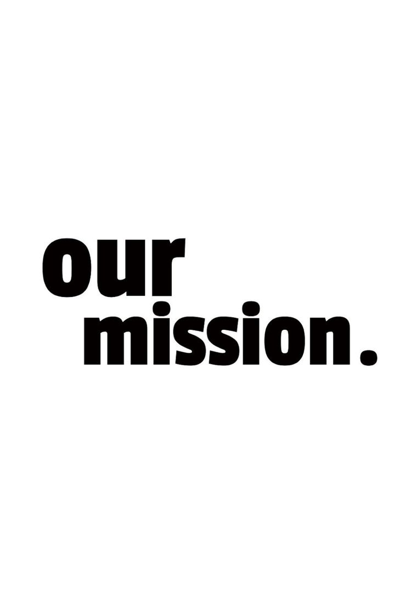
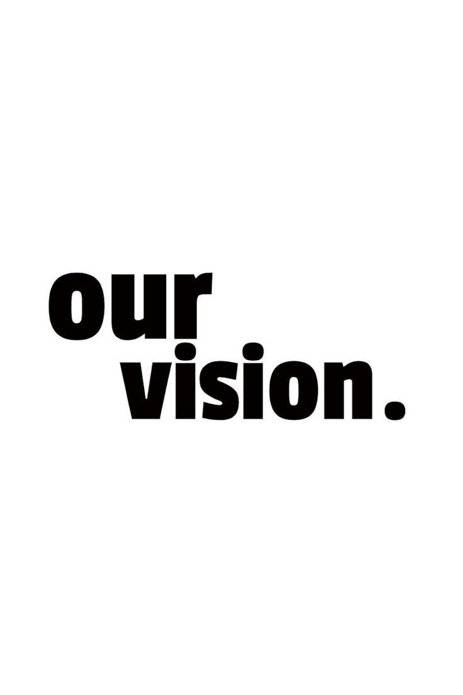
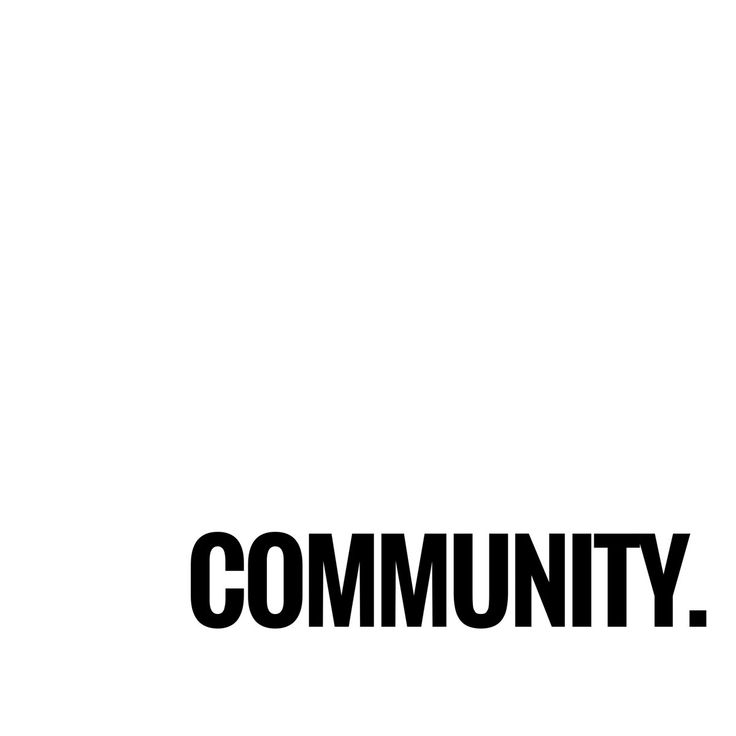

ABOUT TAU LOGISTICS
From humble beginnings to a trusted industrial supplier — the story
of resilience, community, and growth.
THE TAU STORY
Established in 2024, Tau Logistics was founded by Chelane Frans Masemola, a dedicated man who turned a challenging situation into an opportunity.
"After being retrenched from my job due to financial constraints, I took a leap of faith and started the business with a passion to provide for my family — as a hustling job."
— Frans Chelane Masemola, Founder
From those humble beginnings, Tau Logistics has grown to offer a range of industrial products including plastic drums, flushing chemical toilets, transport hire, plastic containers (20/25 litres), galvanized drums, and beddings.
The company currently operates primarily through WhatsApp for enquiries and reliable delivery.

OUR MISSION:
To provide the best products and services for our customers' industrial needs, while growing our business and supporting our community.

OUR VISION:
To be the leading provider of industrial suppliers and services in South Africa, trusted for our quality and services.
TARGET AUDIENCE:
People hosting events (weddings, funerals, parties) and people living in rural areas where there is a shortage of water and sanitation.

COMMUNITY COMMITMENT:
We are committed to uplifting the communities around us through employment, affordable pricing, and accessible services.
READY TO GET STARTED?
Browse our products or send us an enquiry today. We're here to help.